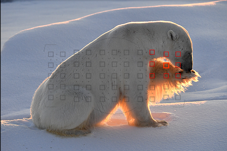
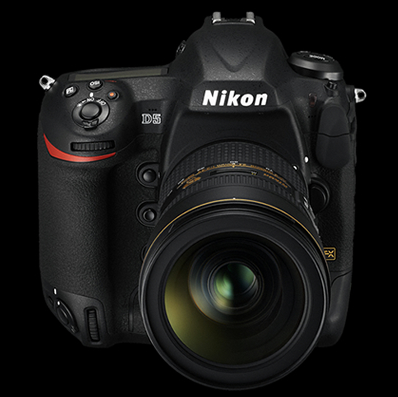

- HOME
-
제품정보
DSLR
전문가를 위한 DX 포맷부터 입문자를 위한 FX 포맷까지! 니콘 최고의 기술이 집약된 다양한 라인업의 SLR 카메라, D Series


NIKKOR Lens
니콘의 독자적인 광학 기술이 집약된 렌즈교환식 카메라용 NIKKOR 렌즈. 약 90여 종 이상의 폭넓은 제품 라인업을 지원하여 누적 생산량 1억 개를 돌파한 니콘의 대표 렌즈 브랜드.


Software
니콘 카메라로 촬영한 사진을 더욱 손쉽게 편집하고 공유할 수 있는 니콘의 독자적인 소프트웨어


Accessory
니콘 카메라의 뛰어난 성능을 최대한으로 이끌어내는 니콘의 액세서리


- 갤러리
- 이벤트

DSLRSingle Lens Reflex Cameras


99개의 크로스 포인트
고속, 고정밀 153포인트 AF 시스템
멀티 CAM 20K 오토 포커스 센서 모듈을 새롭게 개발하여 고속•고정밀의 153포인트 AF 시스템을 완성했습니다. 중앙부와 주변부에 99개의 크로스 포인트를 효율적으로 배치하여, 약 130%* 이상 넓어진 광범위한 커버리지를 제공합니다. 다양한 AF 영역 선택과 최대 -4EV에 대응하는 AF 성능을 통해 콘트라스트가 낮은 피사체에도 보다 정밀한 초점을 실현할 수 있습니다.
그룹 영역 AF | 선택한 초점 포인트를 중심으로 주변 여러 초점 포인트를 그룹화하여 피사체를 포착
싱글포인트
다이나믹 영역 AF (25포인트)
다이나믹 영역 AF (72포인트)
다이나믹 영역 AF (153포인트)
3D-Tracking
자동영역 AF
빠른 장면을 정확하고 선명하게 포착
초당 약 12프레임 고속 연사
신개발 미러 구동기구와 연산 속도가 높은 AF 전용 엔진을 탑재했습니다. 안정적인 파인더 시인성을 제공하는 것은 물론 AF/AE 추적을 유지한 채, 빠른 장면을 놓치지 않고 선명하게 포착할 수 있습니다. 최대 200프레임까지 연속 저장되는 초당 12프레임 고속 연사 모드를 통해서 스포츠, 야생촬영 등의 프로페셔널 사진 작업을 충실하게 지원합니다.

AF 전용 엔진 | 높은 연산 속도로 움직이는 피사체에 대한 신속한 반응 및 뛰어난 추적 성능 지원

초점 추적 고정 ON, 피사체 움직임/불규칙

초점 추적 고정 ON, 피사체 움직임/일정 속도
2,082만 화소의 고화질 이미지
니콘 FX포맷 풀프레임 CMOS 센서
니콘의 새로운 플래그십 기종 D5는 니콘 FX 포맷의 2,082만 화소 대형 풀프레임 CMOS 센서와 새로운 화상 처리 엔진 EXPEED 5를 통해 완벽에 가까운 고화질 이미지를 완성합니다. 디테일한 묘사력 뿐만 아니라 정확한 색 재현과 풍부한 계조 표현으로 눈 앞의 모든 장면을 깊이 있고, 사실적인 이미지로 담아낼 수 있습니다.

약 2,082만 화소의 압도적인 디테일 묘사력과 정확한 색 재현
FX 포맷 (36X24, 1배)
5:4 포맷 (30X24)
1.2 포맷 (30X20, 1.2배)
DX 포맷 (24X16, 1.5배)

선명함을 그대로 유지하는 강력한 고감도/저노이즈 성능

자연광/지속광/스피드 라이트 등 다양한 조명 환경에서 사실적인 피부 질감 및 자연스러운 인물 톤 재현

화질 및 속도의 효율성을 높여주는 다양한 RAW 사이즈(L/M/S) 지원
* RAW 사이즈 M/사이즈 S(12비트 무손실 압축 기록)
니콘 사상 최고 상용 감도 ISO 102400
새로운 화상 처리 엔진 EXPEED 5
고용량 RAW 파일 이미지 및 고화질 영상 데이터를 신속하게 처리하는 새로운 화상 처리 엔진 EXPEED 5는 정교한 이미지 분석을 통해 안정감 있는 색 재현과 뛰어난 노이즈 억제 성능을 제공합니다. 최대 ISO 102400* 까지의 광범위한 감도 지원으로 밝은 야외부터 어두운 실내/야경 등의 저휘도 환경에서도 보다 선명하게 사진과 영상 촬영을 즐길 수 있습니다.


상용 감도 ISO 102400의 탁월한 노이즈 억제 성능 | 실내/야경 등을 삼각대 없이 손쉽게 핸드헬드 촬영


픽셀 바이 픽셀 리드아웃 방식 채용
초고화질 4K UHD 동영상
D5는 니콘 DSLR 카메라 최초로 3840 x 2160 해상도의 4K UHD를 지원합니다. 이미지 센서 영역 전체를 활용하는 픽셀 바이 픽셀 리드아웃(Pixel by Pixel Readout) 방식을 채용했습니다. 픽셀 비닝(Pixel Binning)을 사용하지 않기 때문에, 이미지 전체 픽셀의 정보를 그대로 전달합니다. 최대 ISO 102400* 고감도와 함께 화질 저하 없는 초고화질 4K UHD를 경험할 수 있습니다.*증감 시, Hi 5 (ISO 3280000 상당) 지원, 4K UHD 모드 설정 시, 최대 3분 녹화
생동감을 그대로 느낄 수 있는 4K UHD(30P/25P/24P)초고화질 영상 (최대 ISO 102400 지원) *영상 재생 시, 화질 모드를 4K로 설정 후 감상하세요. *웹 환경에 최적화되어 원본 대비 화질 열화가 발생하였습니다.
Full HD 보다 4배 더 큰 해상도(3840 x 2160)로 생생한 디테일을 표현하는 4K UHD

Full HD 보다 4배 더 큰 해상도(3840 x 2160)로 생생한 디테일을 표현하는 4K UHD

HDMI 단자 연결을 통해 초고화질 4K UHD 영상을 HDMI로 출력
영상 제작에 최적화된 광범위한 호환성
자유로운 4가지 시선의 D Movie
움직임을 자연스럽게 표현하는 Full HD 60p 지원의 D Movie는 4가지 촬상 범위를 제공합니다. Full HD 해상도에 대응하는 FX, DX, 1920 x 1080 트리밍 범위는 물론 4K UHD에 대응하는 3840 x 2160 해상도의 촬상 범위를 자유롭게 선택할 수 있습니다. 또한, 동영상 촬영 메뉴를 독립적으로 설정할 수 있어 사진과 동영상 모드 변경 시, 설정 변경이 필요 없어 편리합니다.
풀프레임 센서 및 화상 처리 엔진 EXPEED 5와 NIKKOR 렌즈의 결합으로 완성되는 Full HD 60p*웹 환경에 최적화되어 원본 대비 화질 열화가 발생하였습니다.


HDMI 연결 단자 및 외장 마이크/헤드폰 단자

마이크 및 헤드폰 연결 시, 라이브뷰를 통해 실시간으로 감도 확인
99개의 크로스 포인트
고속, 고정밀 153포인트 AF 시스템
멀티 CAM 20K 오토 포커스 센서 모듈을 새롭게 개발하여 고속•고정밀의 153포인트 AF 시스템을 완성했습니다. 중앙부와 주변부에 99개의 크로스 포인트를 효율적으로 배치하여, 약 130%* 이상 넓어진 광범위한 커버리지를 제공합니다. 다양한 AF 영역 선택과 최대 -4EV에 대응하는 AF 성능을 통해 콘트라스트가 낮은 피사체에도 보다 정밀한 초점을 실현할 수 있습니다.
 크기:160 x 158.5 x 92mm /무게:약 1240g(본체 기준) * CF 카드 타입 기준, XQD 카드 타입 무게는 약 1235g
수평/수직 구도를 안정적으로 촬영할 수 있는 배터리 그립 일체형의 마그네슘 합금 바디

실링 처리로 눈, 비, 먼지 등을 효과적으로 차단해주는 방진방적 설계


XQD 카드와 CF* 카드 2가지 타입의 메모리카드를 지원합니다. 동일한 종류의 메모리카드를 2매 사용할 수 있는 더블 슬롯 탑재로 순차 기록, 백업 기록, RAW+JPEG 분할 기록 등을 구분하여 이미지를 효율적이고 안전하게 저장할 수 있습니다. 또한, 저전력 설계의 Li-ion 충전식 배터리(EN-EL 18a)*를 채용하여 고속 연사 및 동영상 녹화 시 편리합니다.
향상된 180K 픽셀 RGB 센서 채용
어드밴스드 장면 인식 시스템
고화소의 풀프레임 센서와 더욱 강력해진 180K 픽셀 RGB 센서를 결합하여 강력한 어드밴스드 장면 인식 시스템을 완성했습니다. 촬영 상황에 따른 휘도 및 색 정보 등을 정확하게 파악해 초점, 노출, 조광, 화이트 밸런스 등을 정밀하게 자동 제어합니다. 작은 얼굴의 얼굴 검출 및 AF와의 연계를 강화하여, 고속 연사 시에도 움직이는 피사체의 얼굴에 정확한 초점을 맞출 수 있습니다.

 어드밴스드 장면 인식 시스템
촬영 상황에 따른 휘도 및 색 정보를 정확하게 파악해서 초점/노출/조광/화이트 밸런스 등을 자동 제어
어드밴스드 장면 인식 시스템
촬영 상황에 따른 휘도 및 색 정보를 정확하게 파악해서 초점/노출/조광/화이트 밸런스 등을 자동 제어

풍경

인물

노을

야경


다양한 조명 환경에 따라 선택할 수 있는 3종류의 AUTO 화이트 밸런스
노출 스무싱 모드 지원, 미속도 촬영
4K UHD로 완성하는 타임랩스 영상
인터벌 촬영된 이미지를 자동으로 결합해 4K UHD 해상도의 타임랩스 영상으로 저장하는 미속도 촬영 모드를 제공합니다. 장시간의 변화를 빠르게 재생함으로써, 시간의 흐름을 보다 창조적으로 표현할 수 있습니다. 노출 스무싱 모드를 사용하면 인터벌 촬영된 각 이미지의 노출 차이를 줄여 모든 장면이 자연스럽게 이어지는 타임랩스 영상을 간편하게 즐길 수 있습니다.
타임랩스 영상을 간편하게 완성할 수 있는 미속도 촬영인터벌 촬영 방식으로 임의 시간 간격 별로 촬영한 이미지를 동영상으로 자동 저장하여 장시간의 변화를 빠른 흐름으로 재생

노출 스무싱 모드인터벌 촬영 시, 각 이미지의 노출 차이 최소화하여 연속 이미지가 자연스럽게 이어지도록 촬영
니콘만의 인상적인 컬러 표현
Picture Control System
표준, 자연스럽게, 선명하게, 모노크롬, 인물, 풍경, 단조롭게 등 7가지 Picture Control을 제공합니다. 각 모드에서 선명도, 명료도, 콘트라스트, 밝기, 채도, 색조 등을 세부 조정하는 것은 물론 라이브뷰 상태에서 화면을 보며 실시간으로 적용할 수 있습니다. Picture Control을 사용하면 눈으로 보는 장면과 가장 흡사한 이상적인 컬러 톤으로 인상적인 표현이 가능합니다.

표준

표준

선명하게

자연스럽게

모노크롬

인물

풍경

단조롭게
사진의 본질을 추구하는 우수한 광학 성능
80년 역사의 NIKKOR 렌즈
시선을 압도하는 우수한 해상력의 NIKKOR 렌즈는 뛰어난 묘사력으로 생생하게 살아 숨쉬는 사실적인 이미지를 표현합니다. 다양한 순간에서 그 가치를 느낄 수 있는 광학 성능으로 깊이 있는 시선을 완성합니다. 80년 역사를 자랑하는 NIKKOR 렌즈를 통해서 소중한 순간을 선명하고 아름답게 촬영할 수 있습니다.


제품구성